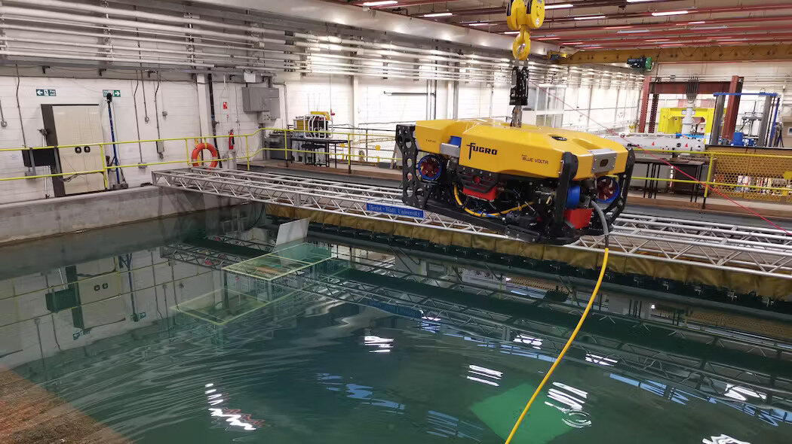
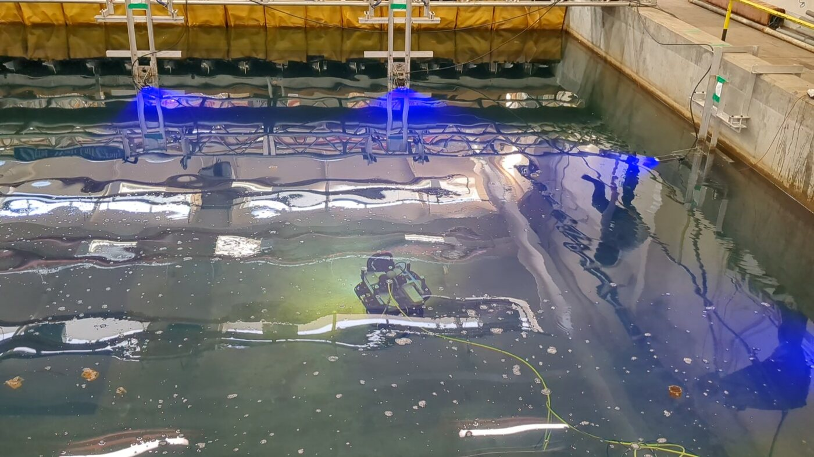
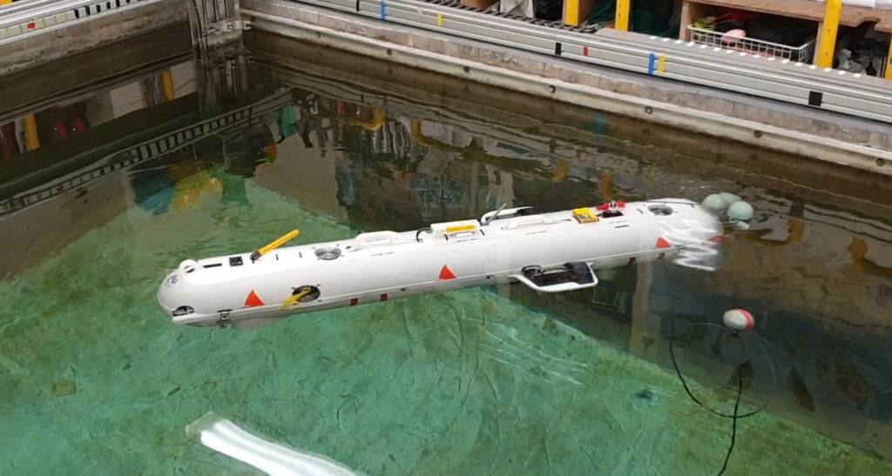
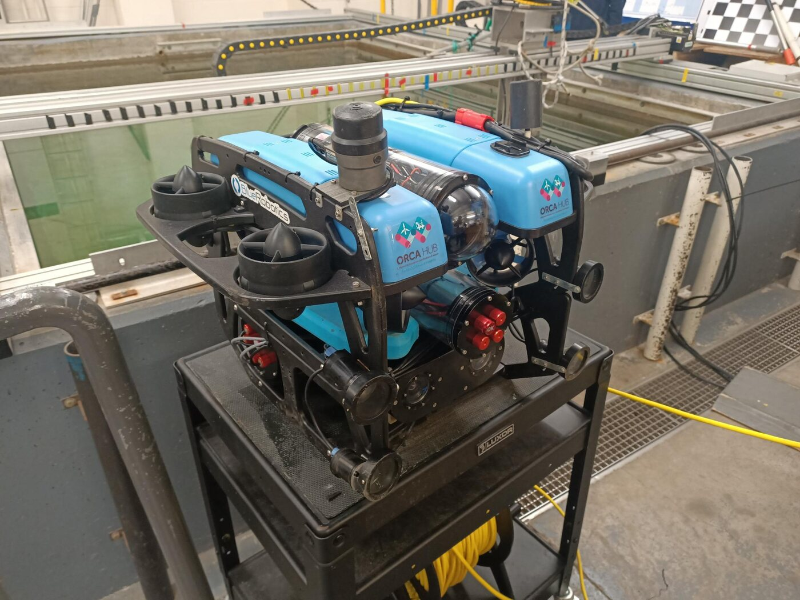
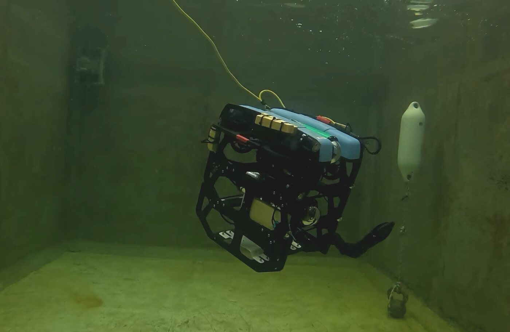
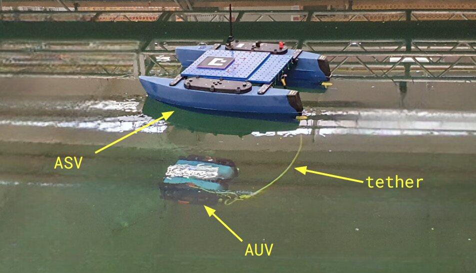
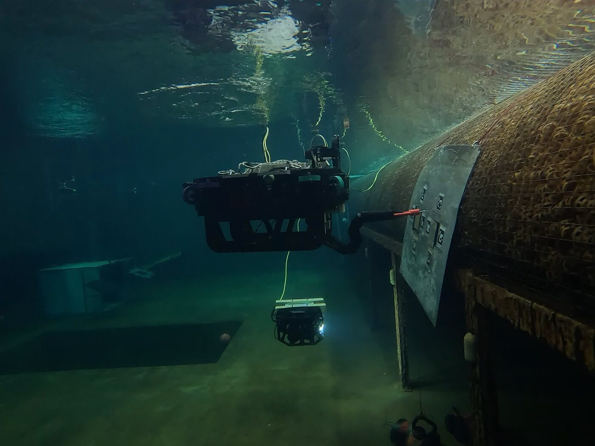
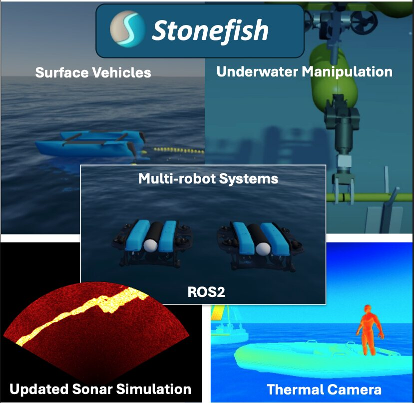
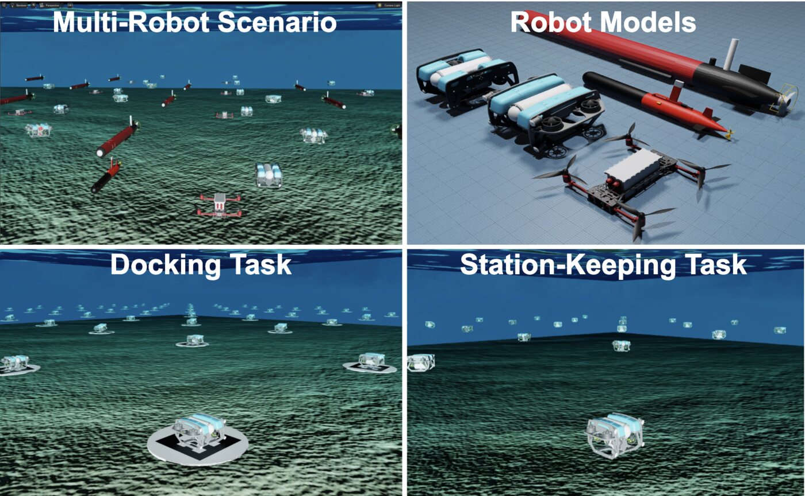

Ocean Systems Lab
Facilities
Tanks

Wave tank
We have a wave tank of 12x12x3m with wave generation capabilities.

Qualisys camera system
The tank is equipped with a Qualisys camera tracking system for precise localization.

Test tank
A smaller tank for day-to-day testing.
Robots
Current robots in the lab.

BlueROV2
We have three BlueROVs with different configurations: one with 3D sonar and stereo camera systems for SLAM, one for manipulation, and one for control.

BlueROV2 with manipulator
Our BlueROV configured for underwater manipulation.

BlueBoat
An autonomous surface vehicle, used here with a tethered underwater vehicle.

New ROV
A new ROV developed in house, equipped with a stereo camera system, a Reach Bravo and Reach Alpha, and a Nortek DVL.
Simulators
Additionally, our group has worked in the development of several simulation environments for marine robotics.

Stonefish
Developed together with the University of Girona. More information

MarineGym
A new simulator based on Isaac Sim. More information